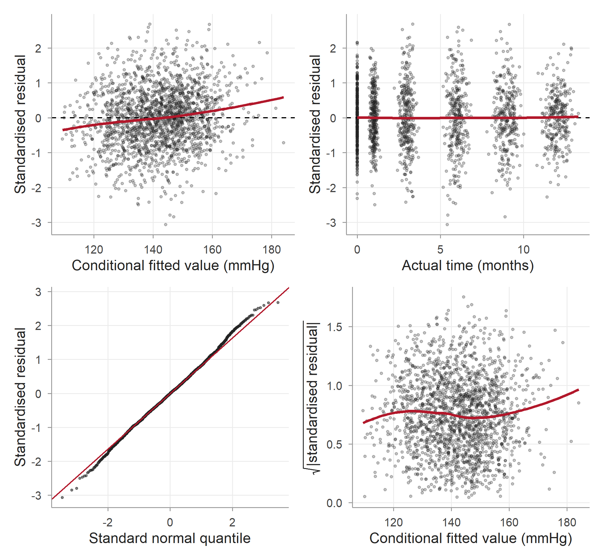
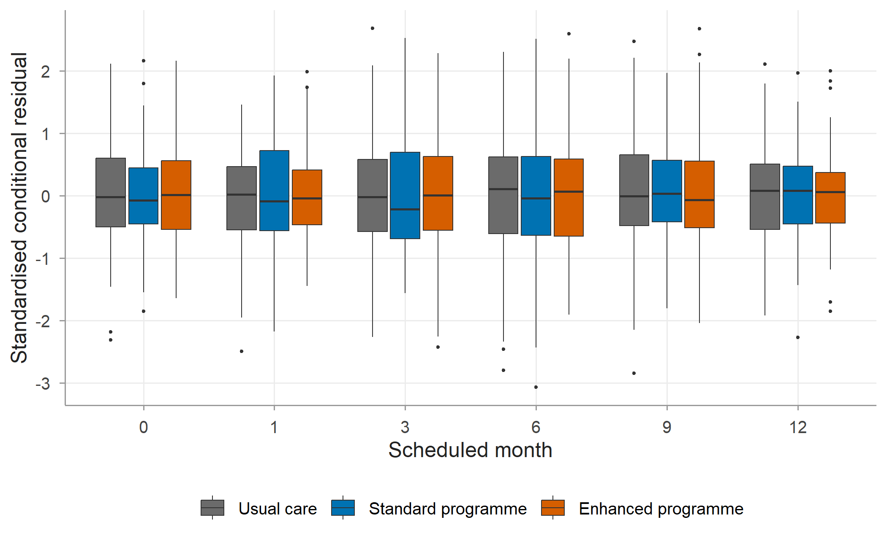
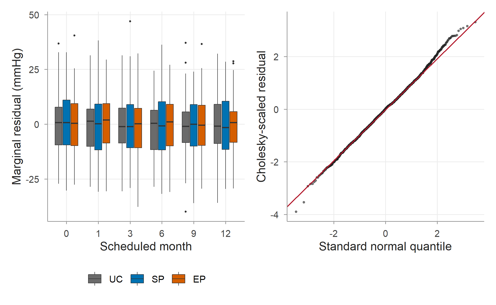
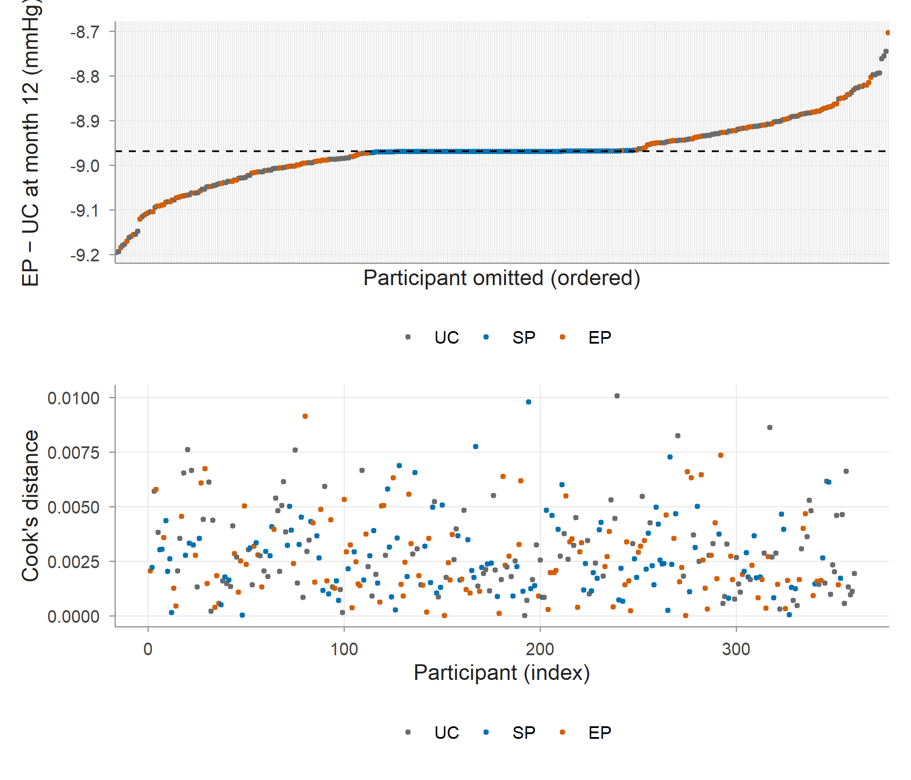
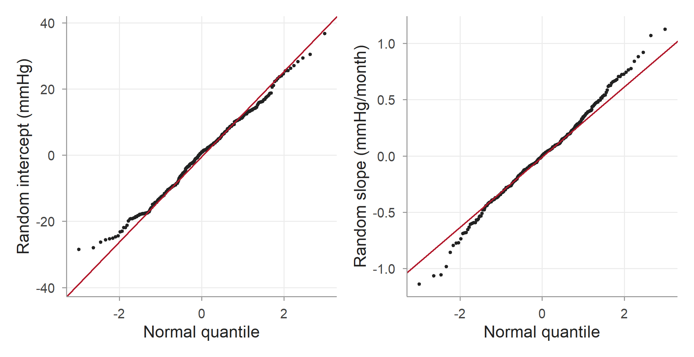
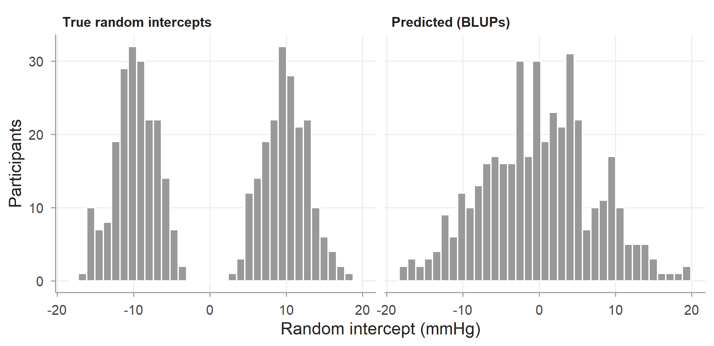
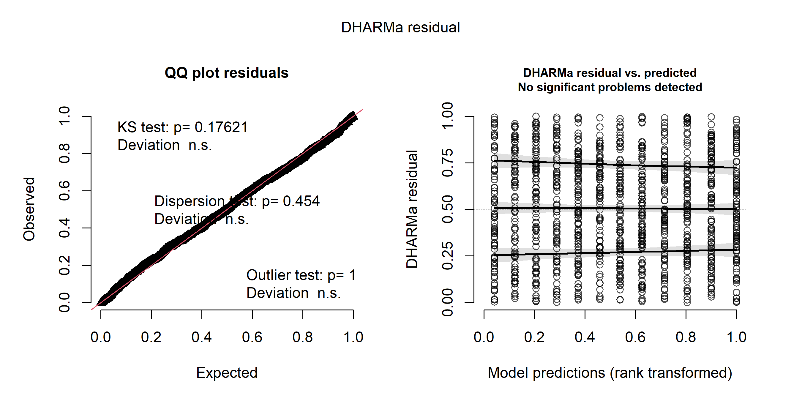
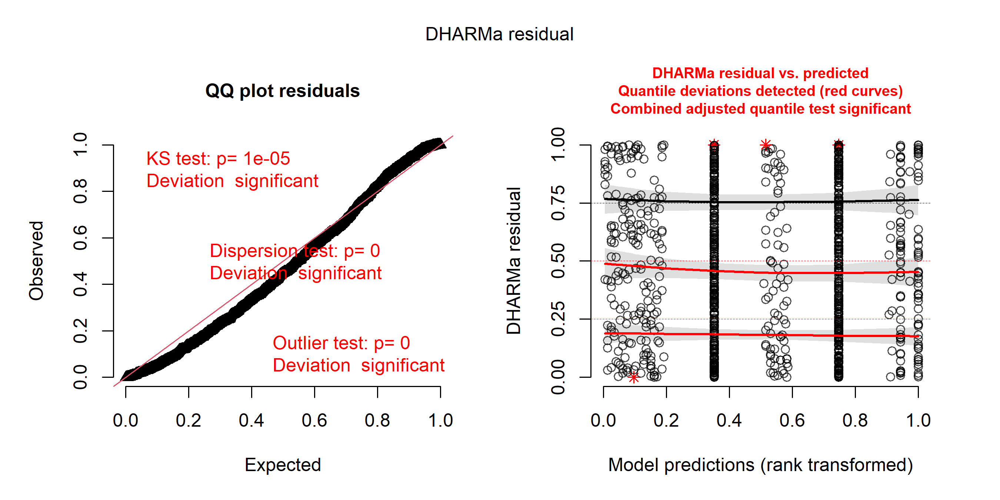
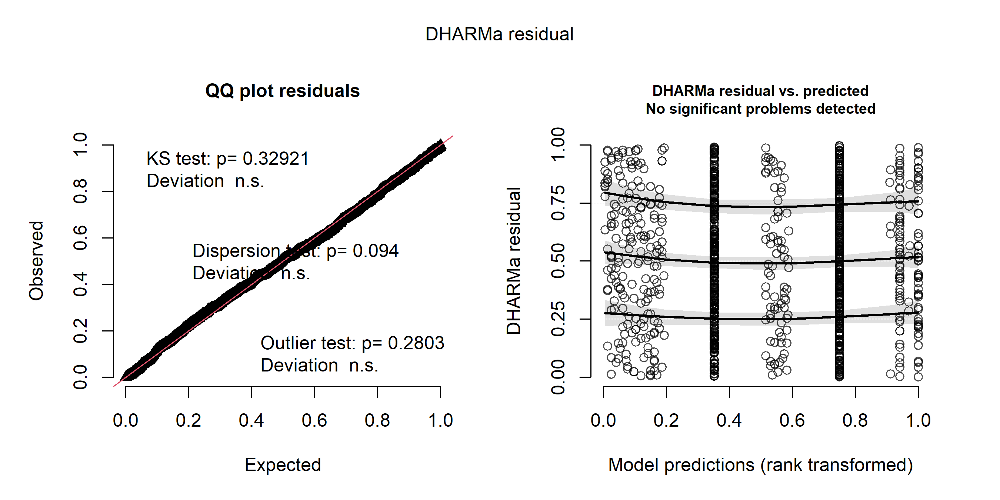
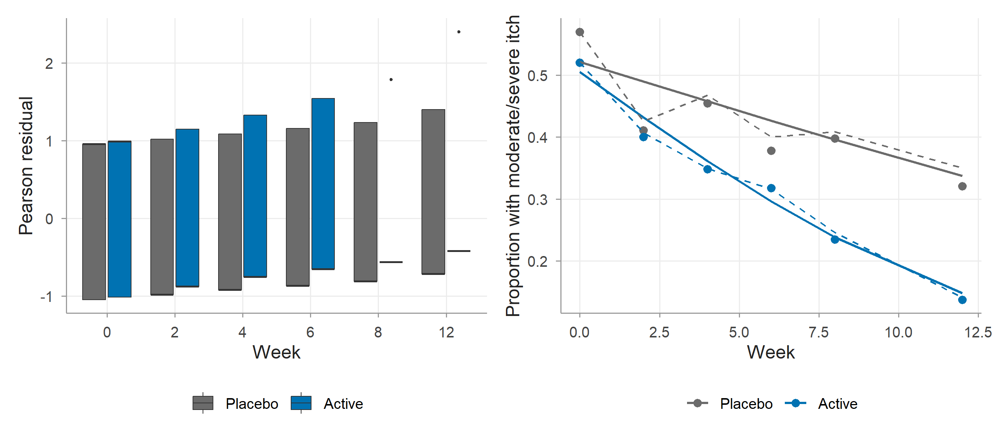

source(here::here("R", "setup.R"))
walk <- load_walk()
clear <- load_clear()
diary <- load_diary()
# Run a slow computation once and keep the result in outputs/models/.
# scripts/11_diagnostics.R creates the same caches with the same seeds.
cache_or_run <- function(name, expr) {
f <- here("outputs", "models", paste0(name, ".rds"))
if (file.exists(f)) return(readRDS(f))
x <- expr
save_model(x, name)
x
}11 Diagnostics and troubleshooting
Every model in this course rests on assumptions about the mean, the variances, the correlation and, for non-normal outcomes, the distribution of the response. Diagnostics are how we find out whether those assumptions are good enough for the question being asked. In longitudinal data this is harder than in ordinary regression, because there are several sources of variation (between participants, within participants, measurement error), several kinds of residual, and predicted random effects that are shrunk towards zero and so do not behave like the quantities they estimate. Fitting problems are also more common: convergence warnings, singular fits, separation and unstable estimates in sparse binary data. This module shows how to check the WALK primary model, the CLEAR and DIARY generalized linear mixed models and a GEE, how to read and respond to warnings, and how to respond to poor fit without drifting into choosing the model that gives the most attractive p-value. It ends with a simple tool that protects against that drift: an analysis log.
Learning outcomes
By the end of this module participants will be able to:
- 11.1 Examine conditional and marginal residuals and identify influential subjects.
- 11.2 Assess the random-effects assumptions and judge how much a violation matters.
- 11.3 Apply outcome-specific diagnostics for GLMMs and GEE, including simulation-based residuals.
- 11.4 Diagnose and respond to convergence warnings, separation, sparse outcomes and unstable estimates.
- 11.5 Respond to poor fit in a principled way, without changing models to obtain significance.
- 11.6 Document analytical decisions in an analysis log.
Prerequisites
Module 0 (residual plots in linear regression), Module 4 (linear mixed models and best linear unbiased predictors), Module 5 (covariance structures and singular fits), Modules 7 and 8 (GEE and GLMMs for the CLEAR and DIARY outcomes) and Module 10 (missing at random).
WarningSimulated data
All examples use simulated data from fictional studies. Results illustrate methods; they are not empirical findings.
NoteCached computations
Three parts of this module are slow: 360 leave-one-participant-out refits and two small simulation studies. They are run once by scripts/11_diagnostics.R and stored in outputs/models/ (m11_loo.rds, m11_re_shape_sim.rds, m11_dharma_grouped_calibration.rds). The notes read these files if they exist and otherwise recompute them with the same seeds, so the results are identical either way. The function cache_or_run() in the setup chunk does this.
11.1 What diagnostics can and cannot tell you
A diagnostic is a check of a specific assumption, and each assumption matters for some conclusions more than others. For the WALK primary estimand (the difference in mean change in systolic blood pressure, SBP, from baseline to month 12), the most important assumptions are that the mean model is right (each arm has its own mean at each scheduled visit, so this is hard to get wrong) and that the covariance model is good enough for valid standard errors and for valid handling of dropout under missing at random (MAR). The normality of the residuals and of the random effects matters much less for the fixed effects, because their estimates are averages over hundreds of participants. Normality matters more for prediction of an individual trajectory and for prediction intervals.
The table below lists the main assumptions of a longitudinal model, the check that addresses each one, and how much a violation typically matters for the estimate of a treatment effect.
| Assumption | Main check | Consequence of violation for the treatment effect |
|---|---|---|
| Mean model correct (shape of change, interactions) | Residuals against time and fitted values, by arm; observed against fitted means | Bias. Usually the most serious problem |
| Covariance model adequate | Cholesky-scaled marginal residuals; comparison of implied and observed covariance (Module 5) | Wrong standard errors; bias under MAR dropout if badly wrong |
| Constant residual variance | Scale-location plot; residuals by visit | Mostly affects standard errors and efficiency |
| Normal residual errors | Normal Q–Q plot of conditional residuals | Little effect on estimates in large samples; affects prediction intervals |
| Normal random effects | Q–Q plot of predicted random effects (with care) | Little effect on fixed effects; affects individual predictions |
| No single participant dominates | Leave-one-participant-out influence | A fragile conclusion |
| Correct distribution (GLMMs): dispersion, zeros | Simulation-based (DHARMa) residuals | Standard errors too small under overdispersion; possible bias |
| GEE mean model correct | Fitted against observed proportions by visit; residuals by visit | Bias in the marginal effect |
Diagnostics are not hypothesis tests of the model’s truth. With 1,897 observations almost any formal test will detect small departures, and with 40 participants important departures can go undetected. Treat formal tests as one piece of evidence and judge the size of a problem by its effect on the quantity you report.
NoteWhy this matters
A diagnostic check is only useful if you know in advance what you would do with each possible answer. Writing that down before looking (in the statistical analysis plan or the analysis log) is what separates model checking from searching for a convenient model. Module 12 shows how to put these rules in a statistical analysis plan.
11.2 Residuals for the linear mixed model
11.2.1 The research question and estimand
The question is not about the WALK participants’ blood pressure itself, but about the model used to answer the WALK question: does the primary model describe the data well enough that its estimate of the difference in mean change from baseline to month 12 (EP minus UC, and SP minus UC) and its standard error can be trusted?
11.2.2 Data structure and outcome types
The WALK analysis dataset has one row per attended visit: 1897 observations on 360 participants, with SBP (continuous, mmHg) at scheduled months 0, 1, 3, 6, 9 and 12 and actual visit times in month. Some visits are missed and some participants drop out, so participants contribute between 1 and 6 observations.
11.2.3 Intuition
In a linear mixed model each observation is the sum of three pieces: the arm mean at that visit, the participant’s own deviation from that mean (the random effects), and the residual error. We can therefore define two different residuals.
- The marginal residual is the observation minus the arm mean. It contains both the participant’s deviation and the residual error, so it describes how far a participant is from the population-average (marginal) curve. Marginal residuals of the same participant are correlated.
- The conditional residual is the observation minus the participant’s own predicted trajectory (arm mean plus predicted random effects). It describes how far an observation is from the subject-specific (conditional) curve, and it estimates the residual error \(\varepsilon_{ij}\).
Marginal residuals check the mean model and the covariance model; conditional residuals check the within-participant part of the model (residual variance, normality, outliers).
11.2.4 The model
The WALK primary model is
\[ y_{ij} = \mathbf{x}_{ij}^\top\boldsymbol\beta + b_{0i} + b_{1i} t_{ij} + \varepsilon_{ij},\qquad \mathbf{b}_i = (b_{0i}, b_{1i})^\top \sim N(\mathbf{0}, G),\qquad \varepsilon_{ij} \sim N(0, \sigma^2), \]
where \(y_{ij}\) is the SBP of participant \(i\) at occasion \(j\), \(\mathbf{x}_{ij}\) contains indicators for scheduled visit, arm and their interaction, \(\boldsymbol\beta\) the fixed effects, \(t_{ij}\) the actual time in months, \(b_{0i}\) and \(b_{1i}\) the random intercept and slope with covariance matrix \(G\) (variances \(\tau_0^2\), \(\tau_1^2\), covariance \(\tau_{01}\)), and \(\varepsilon_{ij}\) the residual error with variance \(\sigma^2\). Writing \(Z_i\) for the matrix with rows \((1, t_{ij})\), the vector \(\mathbf{y}_i\) has marginal covariance \(V_i = Z_i G Z_i^\top + \sigma^2 I\).
The residuals are
\[ \hat r_{ij} = y_{ij} - \mathbf{x}_{ij}^\top\hat{\boldsymbol\beta} \quad\text{(marginal)}, \qquad \hat e_{ij} = y_{ij} - \mathbf{x}_{ij}^\top\hat{\boldsymbol\beta} - \hat b_{0i} - \hat b_{1i}t_{ij} \quad\text{(conditional)}, \]
where \(\hat b_{0i}\) and \(\hat b_{1i}\) are the best linear unbiased predictors (BLUPs) of the random effects. Dividing \(\hat e_{ij}\) by \(\hat\sigma\) gives the standardised conditional residual.
Marginal residuals of a participant are correlated with covariance approximately \(V_i\), so they cannot be read like ordinary regression residuals. A neat solution is to decorrelate them. Write the Cholesky factorisation \(\hat V_i = L_i L_i^\top\) with \(L_i\) lower triangular; then the Cholesky-scaled marginal residuals
\[ \hat{\mathbf{r}}_i^{*} = L_i^{-1}\hat{\mathbf{r}}_i \]
are approximately independent with mean 0 and variance 1 if the mean and covariance models are correct (Fitzmaurice et al. 2011; Verbeke and Molenberghs 2000). Any remaining correlation between consecutive Cholesky residuals is a sign that the covariance model is missing something.
11.2.5 Assumptions and limitations
Conditional residuals depend on the BLUPs, which are shrunk towards zero. Part of the residual error is absorbed by the random effects, so conditional residuals are smaller and less variable than the true errors, and they are negatively correlated within a participant (the random slope is fitted through them). Participants with few observations have more shrinkage and residuals that are harder to interpret. Marginal residuals do not have this problem but are correlated and have unequal variances. Neither type can distinguish a wrong mean model from a wrong covariance model on its own; patterns must be interpreted together. Finally, residual plots under dropout show only the observed data: if participants with high SBP drop out, the late visits contain mainly participants with lower SBP, and that selection is not a model failure.
11.2.6 Fitting the model in R
m_pri <- lmer(sbp ~ visit_f * arm + (1 + month | id), data = walk,
control = lmer_ctrl)
walk_res <- walk |>
mutate(
fit_cond = fitted(m_pri), # X beta + Z b
fit_marg = predict(m_pri, re.form = NA), # X beta only
res_cond = resid(m_pri), # y - X beta - Z b
res_cond_std = resid(m_pri, scaled = TRUE), # divided by sigma-hat
res_marg = sbp - fit_marg # y - X beta
)The Cholesky-scaled residuals need \(\hat V_i\) for each participant. The function below builds \(\hat V_i = Z_i\hat G Z_i^\top + \hat\sigma^2 I\) and solves \(L_i\mathbf{r}^*_i = \hat{\mathbf{r}}_i\) with forwardsolve().
chol_resid <- function(model, data, id = "id", time = "month") {
G <- as.matrix(VarCorr(model)$id)
s2 <- sigma(model)^2
r <- data$sbp - predict(model, re.form = NA)
out <- numeric(nrow(data))
for (g in unique(data[[id]])) {
rows <- which(data[[id]] == g)
Z <- cbind(1, data[[time]][rows])
V <- Z %*% G %*% t(Z) + diag(s2, length(rows))
out[rows] <- forwardsolve(t(chol(V)), r[rows]) # chol() gives L'
}
out
}
walk_res$res_chol <- chol_resid(m_pri, walk_res)11.2.7 Interpreting the output
Figure 11.1 shows the four standard plots of the standardised conditional residuals.
p_rf <- ggplot(walk_res, aes(fit_cond, res_cond_std)) +
geom_point(alpha = 0.25, size = 0.8) +
geom_hline(yintercept = 0, linetype = 2) +
geom_smooth(method = "loess", formula = y ~ x, se = FALSE, colour = "#B2182B") +
labs(x = "Conditional fitted value (mmHg)", y = "Standardised residual")
p_rt <- ggplot(walk_res, aes(month, res_cond_std)) +
geom_point(alpha = 0.25, size = 0.8) +
geom_hline(yintercept = 0, linetype = 2) +
geom_smooth(method = "loess", formula = y ~ x, se = FALSE, colour = "#B2182B") +
labs(x = "Actual time (months)", y = "Standardised residual")
p_qq <- ggplot(walk_res, aes(sample = res_cond_std)) +
stat_qq(size = 0.7, alpha = 0.5) + stat_qq_line(colour = "#B2182B") +
labs(x = "Standard normal quantile", y = "Standardised residual")
p_sl <- ggplot(walk_res, aes(fit_cond, sqrt(abs(res_cond_std)))) +
geom_point(alpha = 0.25, size = 0.8) +
geom_smooth(method = "loess", formula = y ~ x, se = FALSE, colour = "#B2182B") +
labs(x = "Conditional fitted value (mmHg)",
y = expression(sqrt("|standardised residual|")))
(p_rf | p_rt) / (p_qq | p_sl)
The residuals scatter evenly around zero with no trend against the fitted values or against time; the smoothers are close to flat. The Q–Q plot is close to a straight line: the standardised residuals range from -3.07 to 2.68, 2.3% of them exceed 2 in absolute value and 1 of them exceed 3. Under normality about 5% would exceed 2; fewer do here because conditional residuals are shrunk towards zero, as explained above. The scale-location plot is flat, so the residual variance does not change with the level of SBP.
| Plot | What to look for | WALK primary model |
|---|---|---|
| Residual against fitted | Curvature (wrong mean model), funnel (non-constant variance) | Flat, even band |
| Residual against time | Trend (wrong time trend), changing spread by time | Flat, even band |
| Q–Q plot | Heavy tails, skewness, single outliers | Close to straight; range -3.1 to 2.7 |
| Scale-location | Increasing or decreasing trend | Flat |
Residuals by arm and visit (Figure 11.2) check whether the model fits equally well in every arm at every visit. Because the mean model has a separate mean for every arm and visit, the medians are close to zero by construction; the useful information here is in the spread. The boxes have similar heights in all arms and visits.
ggplot(walk_res, aes(visit_f, res_cond_std, fill = arm)) +
geom_boxplot(outlier.size = 0.6, linewidth = 0.3) +
scale_fill_arm(name = NULL, labels = walk_arm_labels) +
labs(x = "Scheduled month", y = "Standardised conditional residual")
The marginal residuals and the Cholesky-scaled residuals are in Figure 11.3. The marginal residuals are much more variable than the conditional ones (SD 13.2 mmHg against 4.8 mmHg) because they include each participant’s own deviation from the arm mean. The Cholesky-scaled residuals have SD 1.00, close to the value of 1 expected if \(\hat V_i\) is right, and their Q–Q plot is straight.
p_marg <- ggplot(walk_res, aes(visit_f, res_marg, fill = arm)) +
geom_boxplot(outlier.size = 0.6, linewidth = 0.3) +
scale_fill_arm(name = NULL) +
labs(x = "Scheduled month", y = "Marginal residual (mmHg)")
p_chol <- ggplot(walk_res, aes(sample = res_chol)) +
stat_qq(size = 0.7, alpha = 0.5) + stat_qq_line(colour = "#B2182B") +
labs(x = "Standard normal quantile", y = "Cholesky-scaled residual")
p_marg | p_chol
11.2.8 Checking the model
A more searching check of the covariance model is whether consecutive residuals within a participant are correlated.
lag_tab <- walk_res |>
arrange(id, month) |>
group_by(id) |>
mutate(lag_chol = lag(res_chol), lag_cond = lag(res_cond)) |>
ungroup() |>
summarise(r_chol = cor(res_chol, lag_chol, use = "complete.obs"),
r_cond = cor(res_cond, lag_cond, use = "complete.obs"))
lag_tab#> # A tibble: 1 × 2
#> r_chol r_cond
#> <dbl> <dbl>
#> 1 0.06012 -0.2128The two numbers tell different stories, and the difference is instructive. The lag-1 correlation of the conditional residuals is -0.21. That negative value is mostly an artefact: the random intercept and slope are fitted through each participant’s few points, which forces their conditional residuals to alternate in sign, so conditional residuals cannot be used to check serial correlation. The Cholesky-scaled residuals do not have this problem; their lag-1 correlation is 0.06, small but positive. In the simulated truth (which only a simulation lets us know) WALK has serially correlated errors with correlation \(\exp(-|\Delta t|/3)\) that the primary model omits. The check detects a trace of it, and Module 5 shows how to add it. Because a random slope already captures much of this correlation, the effect on the primary contrast is small; that judgement belongs in the analysis log rather than leading to a silent change of model.
11.2.9 Reporting
TipReporting example
Model assumptions were checked with plots of standardised conditional residuals against fitted values, actual time and arm, a normal Q–Q plot and a scale-location plot, and with Cholesky-scaled marginal residuals (Fitzmaurice et al. 2011). No systematic patterns were seen; 2.3% of standardised residuals exceeded 2 in absolute value. Consecutive Cholesky-scaled residuals showed weak positive correlation (r = 0.06), suggesting slight residual serial correlation not captured by the random intercept and slope; a sensitivity analysis adding exponential serial correlation is reported in the supplement. The primary estimate of the difference in mean change at month 12 (EP minus UC) was -9.0 (-11.8 to -6.1) mmHg.
11.2.10 Common mistakes
ImportantCommon mistakes
- Using conditional residuals to judge serial correlation. They are negatively correlated within a participant by construction. Use Cholesky-scaled marginal residuals or compare covariance models (Module 5).
- Reading marginal residuals like OLS residuals. They are correlated within a participant and their spread grows with the random-slope variance. Scale them first.
- Interpreting a perfect fit of arm-by-visit medians as model validation. With a saturated mean model the medians are near zero by construction. Look at the spread and at trends within visits.
- Treating selection by dropout as misfit. Residual plots show only observed visits. A drift at late visits can come from who stayed in the study.
- Over-reacting to formal normality tests. With nearly 2,000 observations they reject for trivial departures that have no effect on the estimand.
11.3 Influential participants
11.3.1 The research question and estimand
Would the main conclusion change if one participant had not taken part? An analysis whose primary estimate depends heavily on one or two participants deserves scrutiny of those participants’ data. The quantity monitored is the month-12 EP minus UC difference in mean change, \(\hat\delta\).
11.3.2 Data structure and outcome types
The unit of influence in longitudinal data is the participant, not the observation, because the observations of one participant are dependent and enter the model together. WALK has 360 participants, so there are that many leave-one-participant-out fits.
11.3.3 Intuition
Refit the model without participant \(i\) and see how much the estimate moves. A participant who is far from the arm mean, has many observations and little shrinkage, and sits in a small group is likely to be influential. One number per participant (the change in \(\hat\delta\)) answers the direct question; a summary over all fixed effects (a Cook’s distance) asks whether the participant changes the fitted model more generally.
11.3.4 The model
Let \(\hat{\boldsymbol\beta}\) be the full-data estimate and \(\hat{\boldsymbol\beta}_{(-i)}\) the estimate without participant \(i\). Two measures are useful:
\[ \text{DFBETA}_i = \hat\delta - \hat\delta_{(-i)}, \qquad D_i = \frac{(\hat{\boldsymbol\beta} - \hat{\boldsymbol\beta}_{(-i)})^\top\, \widehat{\text{Var}}(\hat{\boldsymbol\beta})^{-1}\, (\hat{\boldsymbol\beta} - \hat{\boldsymbol\beta}_{(-i)})}{p}. \]
Here \(\hat\delta_{(-i)}\) is the EP minus UC difference in mean change at month 12 without participant \(i\) (in the primary model it equals the coefficient of visit_f12:armEP), \(\widehat{\text{Var}}(\hat{\boldsymbol\beta})\) the estimated covariance matrix of the fixed effects from the full fit, and \(p\) the number of fixed effects. \(D_i\) is a Cook’s-distance-type measure computed by hand (Verbeke and Molenberghs 2000 discuss influence measures for mixed models). It measures the shift in all fixed effects in units of their joint uncertainty.
11.3.5 Assumptions and limitations
Leave-one-out refits keep the variance components free to change, which is realistic but slow (one refit per participant). There are no universal cut-offs. A useful rule of thumb is to compare \(|\text{DFBETA}_i|\) with the standard error of \(\hat\delta\): a participant who moves the estimate by a large fraction of a standard error is worth investigating. Influence is not a reason to delete data. An influential participant may have a recording error, which should be checked against source documents, or may be a genuine part of the population.
11.3.6 Fitting the model in R
The refits use the full-data variance parameters as starting values, which speeds them up. The result is cached.
ids <- unique(walk$id)
loo <- cache_or_run("m11_loo", {
b_full <- fixef(m_pri)
V_inv <- solve(as.matrix(vcov(m_pri)))
theta0 <- getME(m_pri, "theta")
res <- lapply(ids, function(g) {
m_g <- lmer(sbp ~ visit_f * arm + (1 + month | id),
data = walk[walk$id != g, ], control = lmer_ctrl,
start = theta0)
d <- b_full - fixef(m_g)
data.frame(id = g,
ep12 = unname(fixef(m_g)["visit_f12:armEP"]),
sp12 = unname(fixef(m_g)["visit_f12:armSP"]),
cook = as.numeric(t(d) %*% V_inv %*% d) / length(d))
})
bind_rows(res)
})
loo <- loo |>
left_join(walk |> distinct(id, arm), by = "id") |>
left_join(walk |> count(id, name = "n_obs"), by = "id") |>
mutate(dfbeta_ep12 = fixef(m_pri)["visit_f12:armEP"] - ep12)
se_ep12 <- sqrt(vcov(m_pri)["visit_f12:armEP", "visit_f12:armEP"])
loo |> arrange(desc(abs(dfbeta_ep12))) |> head(5)#> id ep12 sp12 cook arm n_obs dfbeta_ep12
#> 1 W029 -8.703 -5.380 0.006740 EP 5 -0.2660
#> 2 W146 -9.195 -5.604 0.005235 UC 6 0.2260
#> 3 W020 -8.745 -5.155 0.007618 UC 5 -0.2242
#> 4 W218 -9.193 -5.603 0.004490 UC 6 0.2239
#> 5 W216 -9.184 -5.378 0.003524 EP 6 0.215211.3.7 Interpreting the output
The full-data estimate is -8.97 mmHg with standard error 1.44. Across the 360 leave-one-out fits the estimate ranges from -9.2 to -8.7 mmHg. The most influential participant for this contrast, W029 (EP arm, 5 observations), moves it by -0.27 mmHg, which is 19% of a standard error. The largest Cook’s distance is 0.01 (participant W239). No single participant has an important effect on the conclusion, which is what we expect in a trial of 360 participants with a well-behaved outcome.
p_loo <- ggplot(loo, aes(reorder(id, ep12), ep12, colour = arm)) +
geom_point(size = 0.9) +
geom_hline(yintercept = fixef(m_pri)["visit_f12:armEP"], linetype = 2) +
scale_colour_arm(name = NULL) +
labs(x = "Participant omitted (ordered)",
y = "EP − UC at month 12 (mmHg)") +
theme(axis.text.x = element_blank(), axis.ticks.x = element_blank())
p_cook <- ggplot(loo, aes(seq_along(id), cook, colour = arm)) +
geom_point(size = 0.9) + scale_colour_arm(name = NULL) +
labs(x = "Participant (index)", y = "Cook's distance")
p_loo / p_cook
Two features of the top panel are typical. Omitting a UC or EP participant moves the EP − UC contrast, while omitting an SP participant hardly moves it (the SP points sit on the dashed line), because SP participants contribute to this contrast only through the shared variance parameters. And participants who rise or fall unusually much between baseline and month 12 are the ones that move the contrast most.
11.3.8 Checking the model
If a participant were influential, the next steps would be: check the data for that participant (data entry, unit errors, visit dates); look at the participant’s trajectory beside others in the same arm; refit without the participant as a sensitivity analysis and report both. Do not delete the participant from the primary analysis unless the data are shown to be wrong.
11.3.9 Reporting
TipReporting example
Influence was assessed by refitting the primary model with each participant omitted in turn. The estimated EP − UC difference in mean change at month 12 ranged from -9.2 to -8.7 mmHg (full data -9.0 mmHg); no participant changed the estimate by more than 19% of its standard error.
11.3.10 Common mistakes
ImportantCommon mistakes
- Deleting observations rather than participants. Influence in longitudinal data acts through participants; leaving out a single observation hides the problem in the participant’s other observations.
- Removing influential participants from the primary analysis. Check their data; report a sensitivity analysis; keep them unless the data are wrong.
- Using cut-offs from ordinary regression (such as \(4/n\) for Cook’s distance) as if they had the same meaning here. Judge influence by its effect on the reported estimate.
11.4 Random-effects assumptions
11.4.1 The research question and estimand
Is it reasonable to assume that the random intercepts and slopes are normally distributed, and, more importantly, does it matter for the treatment effect if they are not?
11.4.2 Data structure and outcome types
We use the BLUPs \(\hat b_{0i}\) and \(\hat b_{1i}\) from the WALK primary model, one pair per participant, and two simulated datasets that make the behaviour of BLUPs visible.
11.4.3 Intuition
The natural check is a Q–Q plot of the BLUPs. The difficulty is that BLUPs are not the random effects. Each BLUP is a weighted average of what the participant’s own data say and the population mean of zero, with more weight on zero when the participant has few or noisy observations. This shrinkage has two consequences. BLUPs are less variable than the true random effects, and their distribution partly reflects the normal distribution that the model assumed. A non-normal random-effects distribution can therefore produce BLUPs that look normal, and with very unequal numbers of observations per participant normal random effects can produce BLUPs that look odd.
11.4.4 The model
For a random-intercept model \(y_{ij} = \mu + b_{0i} + \varepsilon_{ij}\) with \(n_i\) observations,
\[ \hat b_{0i} = \lambda_i (\bar y_i - \hat\mu), \qquad \lambda_i = \frac{\tau_0^2}{\tau_0^2 + \sigma^2/n_i}, \]
where \(\bar y_i\) is participant \(i\)’s mean and \(\lambda_i \in (0, 1)\) the shrinkage factor. If \(\tau_0^2\) is small relative to \(\sigma^2/n_i\), \(\lambda_i\) is small and every BLUP is pulled close to zero. The variance of the BLUPs is \(\lambda_i\tau_0^2 < \tau_0^2\).
11.4.5 Assumptions and limitations
Q–Q plots of BLUPs can reveal gross features such as a clear outlying participant or a strongly skewed slope distribution, but they are weak evidence about normality when shrinkage is strong. Formal tests of normality on BLUPs are not valid tests of the random-effects distribution.
11.4.6 Fitting the model in R
re <- ranef(m_pri)$id
names(re) <- c("b0", "b1")
summary(re)#> b0 b1
#> Min. :-28.4912 Min. :-1.13692
#> 1st Qu.: -9.0800 1st Qu.:-0.21825
#> Median : 0.9445 Median : 0.00689
#> Mean : -0.0112 Mean : 0.00209
#> 3rd Qu.: 8.3004 3rd Qu.: 0.20285
#> Max. : 36.8244 Max. : 1.1269211.4.7 Interpreting the output
(ggplot(re, aes(sample = b0)) + stat_qq(size = 0.7) +
stat_qq_line(colour = "#B2182B") +
labs(x = "Normal quantile", y = "Random intercept (mmHg)")) |
(ggplot(re, aes(sample = b1)) + stat_qq(size = 0.7) +
stat_qq_line(colour = "#B2182B") +
labs(x = "Normal quantile", y = "Random slope (mmHg/month)"))
Both plots are close to straight lines. Notice the scale: the BLUPs of the intercept have SD 11.9 mmHg, smaller than the estimated \(\tau_0\) of 12.4 mmHg, and the slopes have SD 0.36 against \(\hat\tau_1 =\) 0.54 mmHg/month. The slopes are shrunk much more than the intercepts because each participant’s slope is estimated from only a few points spread over 12 months.
To see how much shrinkage can hide, we simulate 400 participants whose true random intercepts are clearly bimodal (half near −10 mmHg and half near +10), each with only two measurements and a large residual SD of 15 mmHg.
set.seed(1101)
n_sh <- 400
true_b <- ifelse(runif(n_sh) < 0.5, -10, 10) + rnorm(n_sh, 0, 3)
sh_dat <- data.frame(id = factor(rep(seq_len(n_sh), each = 2)),
y = 140 + rep(true_b, each = 2) + rnorm(2 * n_sh, 0, 15))
m_sh <- lmer(y ~ 1 + (1 | id), data = sh_dat, control = lmer_ctrl)
sh_plot <- bind_rows(
data.frame(value = true_b, what = "True random intercepts"),
data.frame(value = ranef(m_sh)$id[, 1], what = "Predicted (BLUPs)")) |>
mutate(what = factor(what, levels = c("True random intercepts",
"Predicted (BLUPs)")))
ggplot(sh_plot, aes(value)) +
geom_histogram(bins = 35, fill = "grey60", colour = "white") +
facet_wrap(~what) +
labs(x = "Random intercept (mmHg)", y = "Participants")
The shrinkage factor here is about 0.49, so each BLUP keeps only 49% of the participant’s deviation from the mean, mixed with a large share of noise. The two modes disappear and the BLUPs look roughly normal. A Q–Q plot of these BLUPs would give false reassurance.
11.4.8 Checking the model: does non-normality matter?
Since we often cannot tell whether the random effects are normal, the more useful question is whether it matters. A simulation answers this for the fixed effects. We generate two-arm trials with the same design as sim_two_arm() (60 participants per arm, visits at 0, 3, 6, 9 and 12 months, true difference in slopes −0.5 mmHg/month) but draw both random effects from a normal, a right-skewed (centred and scaled \(\chi^2_2\)) or a bimodal distribution, always with the same variances. Each scenario has 300 simulated trials.
draw_re <- function(n, shape) {
switch(shape,
normal = rnorm(n),
skewed = (rchisq(n, 2) - 2) / 2,
bimodal = sample(c(-1, 1), n, TRUE) * 0.9 + rnorm(n, 0, sqrt(1 - 0.81)))
}
sim_re_shape <- function(shape, n_per_arm = 60, times = c(0, 3, 6, 9, 12),
delta = -0.5, sd_int = 11, sd_slope = 0.4,
sd_resid = 6) {
n <- 2 * n_per_arm
trt <- rep(0:1, each = n_per_arm)
u0 <- sd_int * draw_re(n, shape)
u1 <- sd_slope * draw_re(n, shape)
d <- expand.grid(time = times, id = seq_len(n))
d$trt <- trt[d$id]
d$y <- 150 - 0.2 * d$time + delta * d$trt * d$time +
u0[d$id] + u1[d$id] * d$time + rnorm(nrow(d), 0, sd_resid)
d$id <- factor(d$id)
d
}
re_sim <- cache_or_run("m11_re_shape_sim", {
set.seed(1102)
bind_rows(lapply(c("normal", "skewed", "bimodal"), function(sh) {
bind_rows(lapply(seq_len(300), function(r) {
d <- sim_re_shape(sh)
m <- lmer(y ~ time * trt + (1 + time | id), data = d,
control = lmerControl(optimizer = "bobyqa",
calc.derivs = FALSE))
s <- coef(summary(m))["time:trt", ]
data.frame(shape = sh, est = s[["Estimate"]], se = s[["Std. Error"]],
sd_int_hat = attr(VarCorr(m)$id, "stddev")[[1]])
}))
}))
})
re_sum <- re_sim |>
group_by(shape) |>
summarise(n_sims = n(), mean_est = mean(est),
bias = mean(est) + 0.5, mcse_bias = sd(est) / sqrt(n()),
emp_se = sd(est), mean_model_se = mean(se),
coverage = mean(abs(est + 0.5) <= qnorm(0.975) * se),
mcse_cov = sqrt(coverage * (1 - coverage) / n()))
re_sum#> # A tibble: 3 × 9
#> shape n_sims mean_est bias mcse_bias emp_se mean_model_se coverage
#> <chr> <int> <dbl> <dbl> <dbl> <dbl> <dbl> <dbl>
#> 1 bimodal 300 -0.4875 0.01246 0.008345 0.1445 0.1361 0.9267
#> 2 normal 300 -0.4999 0.0001304 0.007796 0.1350 0.1360 0.95
#> 3 skewed 300 -0.4906 0.009377 0.007541 0.1306 0.1367 0.9733
#> # ℹ 1 more variable: mcse_cov <dbl>In all three scenarios the bias is small relative to the effect (between 0 and 0.012 mmHg/month, each within about two Monte Carlo standard errors of zero), the average model-based standard error (0.136 to 0.137) is close to the empirical standard deviation of the estimates (0.131 to 0.145), and 95% confidence interval coverage is between 92.7% and 97.3% (Monte Carlo SE about 1.5 percentage points). The bimodal scenario is the least favourable, with an empirical SE slightly larger than the model-based SE and coverage of 92.7%, but even there the shortfall is within about two Monte Carlo standard errors of 95%, so 300 simulated trials cannot distinguish it from no shortfall. Some fits in these simulations were singular (the script prints boundary messages), which is common with a small slope variance and does not change the conclusion. The fixed-effect estimate and its standard error are fairly insensitive to the shape of the random-effects distribution in a design of this size, which agrees with the wider literature (Verbeke and Molenberghs 2000). Where non-normal random effects do matter is in predicting individual trajectories, in estimating the proportion of participants whose slope exceeds some threshold, and in GLMMs with very large random-effect variances and few observations per participant.
11.4.9 Reporting
TipReporting example
Normal Q–Q plots of the predicted random intercepts and slopes showed no gross departures from normality. Because predicted random effects are shrunk towards zero, these plots are weak evidence about the random-effects distribution; inference about the treatment effect does not depend strongly on this assumption in a trial of this size.
11.4.10 Common mistakes
ImportantCommon mistakes
- Treating BLUPs as if they were the random effects. Their variance is smaller than \(\tau^2\) and their shape is pulled towards normal.
- Running a normality test on BLUPs and treating the p-value as a test of the model.
- Changing the fixed-effects model because the BLUP Q–Q plot is curved. Fixed effects are robust to this; individual predictions are not.
- Ignoring a single extreme BLUP. A participant far from all others may indicate a data error; check it.
11.5 Simulation-based residuals for GLMMs
11.5.1 The research question and estimand
For a binary or count outcome, are the response distribution, the dispersion and the number of zeros implied by the GLMM consistent with the data? We check the CLEAR model for moderate-or-severe itch and two candidate models for the DIARY migraine-day counts.
11.5.2 Data structure and outcome types
CLEAR: 1044 binary observations (itch) on 200 participants at weeks 0 to 12. DIARY: 1026 28-day diary periods on 160 participants; the outcome is the number of migraine days with the number of diary days as exposure.
11.5.3 Intuition
Pearson and deviance residuals from binary and count models are hard to read: for a binary outcome each residual takes one of two values, and the patterns in the plots come from the discreteness, not from misfit. The simulation approach of the DHARMa package (Hartig 2026) avoids this. For each observation it simulates many new responses from the fitted model and records where the observed value falls in the simulated distribution. If the model is right, these scaled (quantile) residuals are uniformly distributed between 0 and 1 whatever the outcome type, so the same plots and tests work for every model.
11.5.4 The model
For observation \(k\) with observed response \(y_k\), simulate \(y_k^{(1)}, \dots, y_k^{(S)}\) from the fitted model and compute
\[ u_k = \frac{1}{S}\sum_{s=1}^S \mathbb{1}\big(y_k^{(s)} < y_k\big) + \frac{V_k}{S}\sum_{s=1}^S \mathbb{1}\big(y_k^{(s)} = y_k\big), \qquad V_k \sim \text{Uniform}(0,1), \]
where the random \(V_k\) spreads ties evenly for discrete outcomes. Under a correct model \(u_k \sim \text{Uniform}(0, 1)\). DHARMa then compares the \(u_k\) with the uniform distribution (Kolmogorov–Smirnov test), compares the spread of observed and simulated responses (dispersion test), and compares the observed and simulated numbers of zeros (zero-inflation test).
11.5.5 Assumptions and limitations
Two choices matter for longitudinal models. First, the simulations can be conditional on the fitted random effects (the default since DHARMa 0.5.0) or unconditional, drawing new random effects each time. Conditional simulation checks the within-participant part of the model; unconditional simulation checks the whole hierarchy, including the random-effects variance. Second, observation-level residuals of a GLMM are not independent within a participant, so residuals can also be aggregated to the participant level with recalculateResiduals(group = id). Below we show that the participant-level test should use unconditional simulations. As with any test, large datasets detect trivial departures; read the plots, and judge the size of the problem.
11.5.6 Fitting the model in R
m_clear <- glmer(itch ~ week * arm + (1 | id), family = binomial, data = clear)
sim_clear <- simulateResiduals(m_clear, n = 1000, seed = 1103)plot(sim_clear)
For DIARY we compare a Poisson and a negative binomial GLMM, both with log(days) as an offset so that the model describes the rate of migraine days per diary day.
m_pois <- glmmTMB(migraine_days ~ arm * post + offset(log(days)) + (1 | id),
family = poisson, data = diary)
m_nb <- glmmTMB(migraine_days ~ arm * post + offset(log(days)) + (1 | id),
family = nbinom2, data = diary)
sim_pois <- simulateResiduals(m_pois, n = 1000, seed = 1104)
sim_nb <- simulateResiduals(m_nb, n = 1000, seed = 1104)plot(sim_pois)#> DHARMa:testOutliers with type = binomial may have inflated Type I error rates for integer-valued distributions. To get a more exact result, it is recommended to re-run testOutliers with type = 'bootstrap'. See ?testOutliers for details
#> DHARMa:testOutliers with type = binomial may have inflated Type I error rates for integer-valued distributions. To get a more exact result, it is recommended to re-run testOutliers with type = 'bootstrap'. See ?testOutliers for details
plot(sim_nb)
11.5.7 Interpreting the output
tst <- function(s, zero = TRUE) {
data.frame(
uniformity_p = testUniformity(s, plot = FALSE)$p.value,
dispersion = unname(testDispersion(s, plot = FALSE)$statistic),
dispersion_p = testDispersion(s, plot = FALSE)$p.value,
zero_ratio = if (zero) unname(testZeroInflation(s, plot = FALSE)$statistic) else NA,
zero_p = if (zero) testZeroInflation(s, plot = FALSE)$p.value else NA)
}
dharma_tab <- bind_rows(
cbind(model = "CLEAR logistic GLMM", tst(sim_clear, zero = FALSE)),
cbind(model = "DIARY Poisson GLMM", tst(sim_pois)),
cbind(model = "DIARY negative binomial GLMM", tst(sim_nb)))
dharma_tab#> model uniformity_p dispersion dispersion_p
#> 1 CLEAR logistic GLMM 1.762e-01 1.015 0.454
#> 2 DIARY Poisson GLMM 1.211e-05 1.512 0.000
#> 3 DIARY negative binomial GLMM 3.292e-01 1.150 0.094
#> zero_ratio zero_p
#> 1 NA NA
#> 2 1.593 0.000
#> 3 1.056 0.542| Output | What it means | CLEAR | DIARY Poisson | DIARY NB |
|---|---|---|---|---|
uniformity_p |
KS test of scaled residuals against Uniform(0,1) | p = 0.176 | p < 0.001 | p = 0.329 |
dispersion |
Spread of observed relative to simulated responses (1 = as expected) | 1.01 | 1.51 | 1.15 |
zero_ratio |
Observed zeros / expected zeros | not relevant | 1.59 | 1.06 |
For CLEAR the scaled residuals are consistent with uniformity and the dispersion ratio is 1.01, as expected for a binary outcome (overdispersion is not defined for single binary observations, so this test is uninformative here). The plot against predictions shows no pattern.
The DIARY Poisson model fails clearly. Its dispersion ratio is 1.51 (p < 0.001), the data contain 1.59 times as many zero counts as the model predicts, and the Q–Q plot bends away from the diagonal. A random intercept alone does not account for the extra variation from period to period within a participant. The negative binomial model has a dispersion ratio of 1.15 (p = 0.094, no clear evidence of remaining overdispersion) and a zero ratio of 1.06 (p = 0.542). The apparent “zero inflation” of the Poisson model was a symptom of overdispersion: once the variance is modelled, the zeros are as expected, and a zero-inflated model is not needed. In this simulation we know that this is correct, because no excess zeros were generated.
The practical consequence of ignoring overdispersion is on the standard errors.
rbind(Poisson = fixef_table(m_pois)[4, c("estimate", "se")],
NB = fixef_table(m_nb)[4, c("estimate", "se")])#> estimate se
#> Poisson -0.2272 0.08011
#> NB -0.1966 0.11958The rate-ratio estimates for armActive:post are similar, but the Poisson standard error (0.08) is smaller than the negative binomial one (0.12), so the Poisson model overstates the precision of the treatment effect.
11.5.8 Checking the model: participant-level residuals and the choice of simulation
Aggregating the residuals by participant checks whether whole participants have more or fewer events than the model expects, which is where a misspecified random-effects variance shows up. The calibration of this test depends on how the random effects are simulated. To find out which setting to use, we simulate 20 datasets from a correctly specified logistic random-intercept model with the CLEAR design, fit the right model, and record the p-value of the participant-level dispersion test under conditional and unconditional simulation. A well-calibrated test should reject in about 5% of datasets.
grp_calib <- cache_or_run("m11_dharma_grouped_calibration", {
set.seed(1105)
bind_rows(lapply(1:20, function(r) {
n <- 200; weeks <- c(0, 2, 4, 6, 8, 12)
b <- rnorm(n, 0, 2); trt <- rep(0:1, each = n / 2)
d <- expand.grid(week = weeks, id = seq_len(n))
d$trt <- trt[d$id]
d$itch <- rbinom(nrow(d), 1,
plogis(b[d$id] - 0.06 * d$week - 0.16 * d$trt * d$week))
m <- glmer(itch ~ week * trt + (1 | id), family = binomial, data = d)
out <- sapply(c("conditional", "unconditional"), function(how) {
s <- simulateResiduals(m, n = 300, simulateREs = how, seed = r)
g <- recalculateResiduals(s, group = d$id)
testDispersion(g, plot = FALSE)$p.value
})
data.frame(rep = r, p_conditional = out[1], p_unconditional = out[2])
}))
})
colMeans(grp_calib[, -1] < 0.05)#> p_conditional p_unconditional
#> 1 0With conditional simulation the participant-level test rejected a correct model in 100% of the 20 datasets; with unconditional simulation it rejected in 0%. Conditional simulations hold each participant’s predicted random effect fixed, so they cannot reproduce the full between-participant variation in participant totals. For participant-level checks, use simulateREs = "unconditional". Applied to CLEAR:
sim_clear_u <- simulateResiduals(m_clear, n = 1000, seed = 1103,
simulateREs = "unconditional")
grp_clear_u <- recalculateResiduals(sim_clear_u, group = clear$id)
testDispersion(grp_clear_u, plot = FALSE)#>
#> DHARMa nonparametric dispersion test via sd of residuals fitted vs.
#> simulated
#>
#> data: simulationOutput
#> dispersion = 1, p-value = 0.6
#> alternative hypothesis: two.sidedThe participant-level dispersion ratio is 1.04 (p = 0.578), so the between-participant variation in itch is consistent with the fitted random-intercept SD.
11.5.9 Reporting
TipReporting example
Model fit was checked with simulation-based scaled residuals (DHARMa, 1,000 simulations) (Hartig 2026). For the migraine-day counts a Poisson GLMM showed overdispersion (dispersion ratio 1.51) and more zero counts than expected (ratio 1.59); a negative binomial GLMM showed no clear evidence of either (dispersion ratio 1.15, zero ratio 1.06) and was used. Zero inflation was therefore not modelled.
11.5.10 Common mistakes
ImportantCommon mistakes
- Reading Pearson residual plots of binary data. The two bands are produced by the discreteness. Use scaled (quantile) residuals.
- Adding zero inflation because there are “many zeros”. Check overdispersion first; a negative binomial model often explains the zeros.
- Testing for overdispersion in single binary observations. It is not defined. Aggregate (by participant or visit) if needed.
- Using conditional simulations for participant-level tests. They reject correct models; use
simulateREs = "unconditional". - Treating a significant test in a large dataset as decisive. Look at the size of the departure and its effect on the estimate.
11.6 Diagnostics for GEE
11.6.1 The research question and estimand
GEE (Module 7) estimates population-average (marginal) effects and needs only the mean model to be correct; robust (sandwich) standard errors protect against a wrong working correlation. The main diagnostic question is therefore whether the mean model is right: does the linear-in-week model on the logit scale describe how the proportion with moderate or severe itch changes over the weeks in each CLEAR arm?
11.6.2 Data structure and outcome types
CLEAR binary itch outcome; each participant is a cluster.
11.6.3 Intuition
Compare the proportions fitted by the model with the observed proportions at each week and arm, and plot residuals by visit. A more flexible mean model (week as a factor, which fits each arm-week proportion freely) gives a reference: if the restricted model is close to it, the restriction costs little.
11.6.4 The model
\[ \text{logit}\,\mu_{ij} = \beta_0 + \beta_1\,\text{week}_{ij} + \beta_2\,\text{Active}_i + \beta_3\,\text{week}_{ij}\text{Active}_i, \]
where \(\mu_{ij} = E(Y_{ij}\mid\mathbf{x}_{ij})\) is the marginal probability of moderate or severe itch. The Pearson residual is \((y_{ij} - \hat\mu_{ij})/\sqrt{\hat\mu_{ij}(1-\hat\mu_{ij})}\).
11.6.5 Assumptions and limitations
GEE with an exchangeable or independence working correlation is valid when missing data are missing completely at random (MCAR). CLEAR dropout depends on the last observed severity (MAR), so the observed proportions at late weeks come from a selected group and the fitted GEE means are themselves estimated from that selected group. Disagreement between the linear and the categorical-week model is still informative about the shape of the mean; agreement with the observed proportions does not prove the absence of dropout bias (Module 10).
11.6.6 Fitting the model in R
clear_gee <- clear |> mutate(id_f = factor(id)) |> arrange(id_f, week)
g_lin <- geeglm(itch ~ week * arm, id = id_f, family = binomial,
corstr = "exchangeable", data = clear_gee)
g_cat <- geeglm(itch ~ week_f * arm, id = id_f, family = binomial,
corstr = "exchangeable", data = clear_gee)
clear_gee <- clear_gee |>
mutate(fit_lin = fitted(g_lin)[, 1], fit_cat = fitted(g_cat)[, 1],
pres = (itch - fit_lin) / sqrt(fit_lin * (1 - fit_lin)))
gee_check <- clear_gee |>
group_by(arm, week) |>
summarise(n = n(), observed = mean(itch), linear = mean(fit_lin),
categorical = mean(fit_cat))
gee_check#> # A tibble: 12 × 6
#> # Groups: arm [2]
#> arm week n observed linear categorical
#> <fct> <dbl> <int> <dbl> <dbl> <dbl>
#> 1 Placebo 0 100 0.57 0.5212 0.57
#> 2 Placebo 2 90 0.4111 0.4895 0.4249
#> 3 Placebo 4 88 0.4545 0.4579 0.4678
#> 4 Placebo 6 82 0.3780 0.4266 0.4000
#> 5 Placebo 8 78 0.3974 0.3959 0.4083
#> 6 Placebo 12 78 0.3205 0.3371 0.3501
#> 7 Active 0 100 0.52 0.5054 0.52
#> 8 Active 2 90 0.4 0.4319 0.4074
#> 9 Active 4 92 0.3478 0.3613 0.3495
#> 10 Active 6 85 0.3176 0.2962 0.3157
#> 11 Active 8 81 0.2346 0.2385 0.2459
#> 12 Active 12 80 0.1375 0.1477 0.141111.6.7 Interpreting the output
p_gee_res <- ggplot(clear_gee, aes(week_f, pres, fill = arm)) +
geom_boxplot(outlier.size = 0.6, linewidth = 0.3) +
scale_fill_arm(name = NULL) +
labs(x = "Week", y = "Pearson residual")
p_gee_mean <- ggplot(gee_check, aes(week, observed, colour = arm)) +
geom_point(size = 2) +
geom_line(aes(y = linear), linewidth = 0.7) +
geom_line(aes(y = categorical), linetype = 2) +
scale_colour_arm(name = NULL) +
labs(x = "Week", y = "Proportion with moderate/severe itch")
p_gee_res | p_gee_mean
The fitted proportions from the linear-in-week model follow the observed ones in both arms, and the Pearson residuals are centred near zero at most weeks. The largest discrepancy, 7.8 percentage points, is in the placebo arm at week 2, where the observed proportion drops more steeply than a straight line on the logit scale allows. The categorical-week model, which has a free mean at every week, lies close to the observed proportions but not exactly on them: with an exchangeable working correlation and dropout, the estimating equations borrow information from each participant’s other visits (with an independence working correlation they would reproduce the observed proportions). The quasi-likelihood information criterion (QIC) is 1345.4 for the linear model and 1351.9 for the categorical model; lower is better, so the eight extra parameters of the categorical model are not justified. The linear-in-week mean model is adequate, with a small early misfit in the placebo arm that should be mentioned.
11.6.8 Checking the model
If the residuals had trended with week, natural next steps would be a piecewise-linear or spline term for week (Module 9), chosen on the grounds of fit at all weeks rather than on the treatment effect. The working correlation can also be checked, by comparing robust and model-based standard errors: large differences suggest the working correlation is poor, which affects efficiency rather than validity.
11.6.9 Reporting
TipReporting example
The adequacy of the GEE mean model was assessed by comparing fitted and observed proportions by week and arm and by examining Pearson residuals by week. Fitted proportions were within 7.8 percentage points of the observed proportions in every arm-week cell (the largest difference was at week 2 in the placebo arm), and the model with linear week on the logit scale had a lower QIC than a model with a separate proportion at each week (1345.4 against 1351.9).
11.6.10 Common mistakes
ImportantCommon mistakes
- Checking GEE residual normality. GEE makes no distributional assumption beyond the mean and variance function.
- Choosing the working correlation by the p-value it gives. Choose it before the analysis; robust SEs keep inference valid.
- Forgetting that GEE assumes MCAR with standard (unweighted) estimating equations. Observed and fitted proportions can agree while both are biased by dropout.
11.7 Convergence, singular fits, separation and unstable estimates
11.7.1 The research question and estimand
When software warns that a model has not converged, is singular, or produces huge coefficients, the question is: can the reported estimates be trusted? The estimand is unchanged; what is at stake is whether the numbers on the screen are the maximum-likelihood estimates of the model we specified.
11.7.2 Data structure and outcome types
WALK (continuous) for convergence and singular fits; a small simulated binary trial for separation; CLEAR for sensitivity of a binary GLMM to the integration method.
11.7.3 Intuition
Mixed models are fitted by numerical optimisation of a likelihood over the variance parameters. The optimiser stops when it thinks it has reached the top. lme4 then checks the gradient (the slope of the likelihood surface) at that point: at a true maximum it should be zero. A convergence warning says that the gradient is larger than a tolerance. It may mean the optimiser stopped too early, or only that the surface is flat or badly scaled so the numerical gradient is imprecise. A singular fit means that a variance is estimated as zero or a correlation as ±1: the model is more complex than the data can support. Separation in a logistic model means that some combination of predictors perfectly predicts the outcome, so the likelihood keeps increasing as a coefficient goes to infinity; the “estimate” is wherever the optimiser gave up.
11.7.4 The model
Convergence is checked through the gradient \(\nabla\ell(\hat{\boldsymbol\theta})\) of the (profiled) log-likelihood with respect to the variance parameters \(\boldsymbol\theta\). lme4 reports \(\max_k|\nabla_k\ell|\) and warns when it exceeds 0.002, and it also checks the scaled gradient \(H^{-1}\nabla\ell\), where \(H\) is the Hessian. Separation is a property of the data: for a logistic model \(\text{logit}\,P(Y=1) = \mathbf{x}^\top\boldsymbol\beta\) there is a direction \(\mathbf{c}\) with \(\mathbf{x}_k^\top\mathbf{c} \ge 0\) whenever \(y_k = 1\) and \(\le 0\) whenever \(y_k = 0\), so \(\ell(\boldsymbol\beta + s\mathbf{c})\) keeps increasing as \(s \to \infty\). Firth’s penalised likelihood (Heinze and Schemper 2002) maximises
\[ \ell^*(\boldsymbol\beta) = \ell(\boldsymbol\beta) + \tfrac12 \log\big|I(\boldsymbol\beta)\big|, \]
where \(I(\boldsymbol\beta)\) is the Fisher information. The penalty keeps the estimates finite and reduces small-sample bias.
11.7.5 Assumptions and limitations
Gradient tolerances are rules of thumb; large datasets and badly scaled parameters produce false alarms, and a fit with no warning can still be wrong. allFit() can only compare the optimisers that are installed (here those from lme4, minqa and nloptr). Firth correction is designed for fixed-effects logistic regression; for GLMMs, weakly informative priors on the fixed effects play a similar role.
11.7.6 Fitting the model in R
(a) Badly scaled variables. Fit the linear-time WALK model with time in days and age in years, then with time in months and age per 10 years.
walk_sc <- walk |> mutate(day = month * 30.44)
m_bad <- lmer(sbp ~ day * arm + age + (1 + day | id), data = walk_sc,
control = lmer_ctrl)#> Warning in checkConv(attr(opt, "derivs"), opt$par, ctrl = control$checkConv, : Model failed to converge with max|grad| = 0.0100125 (tol = 0.002, component 1)
#> See ?lme4::convergence and ?lme4::troubleshooting.#> Warning in checkConv(attr(opt, "derivs"), opt$par, ctrl = control$checkConv, : Model is nearly unidentifiable: very large eigenvalue
#> - Rescale variables?m_good <- lmer(sbp ~ month * arm + I((age - 60) / 10) + (1 + month | id),
data = walk_sc, control = lmer_ctrl)
# the quantity lme4 compares with its 0.002 tolerance: the gradient scaled
# by the Hessian, or the raw gradient if that is smaller
conv_grad <- function(m) {
d <- m@optinfo$derivs
sc <- with(d, solve(chol(Hessian), gradient))
max(pmin(abs(sc), abs(d$gradient)))
}
conv_tab <- data.frame(
model = c("days, age in years", "months, age per 10 years"),
scaled_grad = c(conv_grad(m_bad), conv_grad(m_good)),
ep_slope_per_month = c(fixef(m_bad)["day:armEP"] * 30.44,
fixef(m_good)["month:armEP"]),
logLik_ML = c(logLik(refitML(m_bad)), logLik(refitML(m_good))))
conv_tab#> model scaled_grad ep_slope_per_month
#> day:armEP days, age in years 1.001e-02 -0.7231
#> month:armEP months, age per 10 years 9.233e-05 -0.7231
#> logLik_ML
#> day:armEP -6706
#> month:armEP -6706The badly scaled fit produces the warning shown above: the model is “nearly unidentifiable” with a “very large eigenvalue”, and lme4 suggests rescaling. Its scaled gradient, 0.01, is only just inside the 0.002 tolerance (with another optimiser or slightly different data it can fall outside, adding a “failed to converge” warning), against 9.2e-05 after rescaling. The cause is visible in the estimates: the random-slope SD per day is about 0.017 mmHg, while the intercept SD is about 12.4 mmHg, and age in years enters with a coefficient per year. Parameters on scales that differ by factors of hundreds make the Hessian badly conditioned and the numerical gradient unreliable. Rescaling removes the warning and, reassuringly, the EP slope difference per month is the same in the two fits (-0.723 and -0.723 mmHg/month), as are the maximum-likelihood log-likelihoods (-6706.02 and -6706.02). Compare ML rather than REML log-likelihoods here, because the REML criterion changes when fixed-effect columns are rescaled. The two models are identical apart from units, so the warning was a scaling artefact, but you only know that after rescaling.
(b) Comparing optimisers with allFit(). allFit() refits a model with every available optimiser. If all of them reach the same log-likelihood and the same estimates, a warning from one of them can be dismissed.
# allFit() cannot evaluate the shared lmer_ctrl object stored in the model
# call, so we refit with the identical control setting written out in full.
m_pri_af <- lmer(sbp ~ visit_f * arm + (1 + month | id), data = walk,
control = lmerControl(optimizer = "bobyqa"))
af <- allFit(m_pri_af, verbose = FALSE)
af_sum <- summary(af)
af_tab <- data.frame(
logLik = af_sum$llik,
ep12 = af_sum$fixef[, "visit_f12:armEP"],
sd_int = af_sum$sdcor[, 1], sd_slope = af_sum$sdcor[, 2],
warning = vapply(af_sum$msgs, function(x) !is.null(x), logical(1)))
af_tab#> logLik ep12 sd_int sd_slope warning
#> bobyqa -6624 -8.969 12.37 0.5421 FALSE
#> Nelder_Mead -6624 -8.969 12.37 0.5421 FALSE
#> nlminbwrap -6624 -8.969 12.37 0.5421 FALSE
#> nloptwrap.NLOPT_LN_NELDERMEAD -6624 -8.969 12.37 0.5421 FALSE
#> nloptwrap.NLOPT_LN_BOBYQA -6624 -8.969 12.37 0.5421 FALSEAll 5 optimisers reach the same log-likelihood (they differ by less than 1e-06), the same variance components and the same EP − UC estimate (-8.969 to -8.969 mmHg), and 0 of them issued a warning. The primary model has no convergence problem. The value of allFit() is clearest when a warning does occur. Below the same model is fitted with the lme4 default control settings (no control argument) before calling allFit().
m_pri_def <- lmer(sbp ~ visit_f * arm + (1 + month | id), data = walk)#> Warning in checkConv(attr(opt, "derivs"), opt$par, ctrl = control$checkConv, : Model failed to converge with max|grad| = 0.00236999 (tol = 0.002, component 1)
#> See ?lme4::convergence and ?lme4::troubleshooting.af_def <- summary(allFit(m_pri_def, verbose = FALSE))#> Warning in optwrap(optimizer, devfun, start, lower = lower, upper = upper, : convergence code 1 from nlminbwrap: false convergence (8)
#> Warning in optwrap(optimizer, devfun, start, lower = lower, upper = upper, : Model failed to converge with max|grad| = 0.00236999 (tol = 0.002, component 1)
#> See ?lme4::convergence and ?lme4::troubleshooting.data.frame(logLik = af_def$llik,
ep12 = af_def$fixef[, "visit_f12:armEP"],
warning = vapply(af_def$msgs, function(x) !is.null(x), logical(1)))#> logLik ep12 warning
#> bobyqa -6624 -8.969 FALSE
#> Nelder_Mead -6624 -8.969 FALSE
#> nlminbwrap -6624 -8.969 FALSE
#> nloptwrap.NLOPT_LN_NELDERMEAD -6624 -8.969 TRUE
#> nloptwrap.NLOPT_LN_BOBYQA -6624 -8.969 FALSEWith these settings 1 of the five optimisers reports a gradient slightly above the tolerance (the warning text is printed above the table), yet every optimiser gives the same log-likelihood and the same EP − UC estimate as the others. Agreement across optimisers is strong evidence that such a warning is a false alarm, and it is the kind of evidence to record in the analysis log.
(c) Singular fit. Adding a random intercept and random slope for the 8 clinics asks the data for more than they can give.
m_sing <- lmer(sbp ~ visit_f * arm + (1 + month | id) + (1 + month | clinic),
data = walk, control = lmer_ctrl)#> boundary (singular) fit: see help('isSingular')isSingular(m_sing)#> [1] TRUEVarCorr(m_sing)#> Groups Name Std.Dev. Corr
#> id (Intercept) 11.851
#> month 0.524 -0.17
#> clinic (Intercept) 3.755
#> month 0.139 -1.00
#> Residual 5.622The clinic intercept-slope correlation is estimated at the boundary of −1: with only 8 clinics there is no information to estimate a 2 × 2 clinic covariance matrix. The fixed effects are still estimated, but the random-effects structure should be simplified (for example to a clinic random intercept only, (1 | clinic), as in Module 13) rather than reported as if it were meaningful. Module 5 discusses singular fits in detail (Matuschek et al. 2017; Barr et al. 2013).
(d) Separation in a sparse binary outcome. We simulate a small trial (40 participants, 4 visits, a rare event) in which no active-arm participant has an event after baseline.
set.seed(1106)
n_sep <- 40
sep <- expand.grid(visit = 0:3, id = seq_len(n_sep)) |>
mutate(active = as.integer(id > n_sep / 2), post = as.integer(visit > 0))
b_sep <- rnorm(n_sep, 0, 0.5)
sep$event <- rbinom(nrow(sep), 1,
plogis(-2 + b_sep[sep$id] - 3 * sep$active * sep$post))
sep$event[sep$active == 1 & sep$post == 1] <- 0 # guarantee separation
sep$id <- factor(sep$id)
with(sep, table(group = ifelse(active == 1, "Active", "Control"),
period = ifelse(post == 1, "Post", "Baseline"), event))#> , , event = 0
#>
#> period
#> group Baseline Post
#> Active 18 60
#> Control 15 54
#>
#> , , event = 1
#>
#> period
#> group Baseline Post
#> Active 2 0
#> Control 5 6The cross-tabulation shows the problem at once: zero events in the active arm after baseline. Fitting the logistic model:
m_sep_glm <- glm(event ~ active * post, family = binomial, data = sep)
coef(summary(m_sep_glm))#> Estimate Std. Error z value Pr(>|z|)
#> (Intercept) -1.099 0.5164 -2.12745 0.03338
#> active -1.099 0.9068 -1.21157 0.22568
#> post -1.099 0.6722 -1.63436 0.10218
#> active:post -16.270 1388.3375 -0.01172 0.99065The interaction coefficient is -16.3 with a standard error of 1388. Neither number means anything: the maximum-likelihood estimate is \(-\infty\) and the optimiser simply stopped. A huge coefficient with an even bigger standard error is the signature of separation. The course does not load logistf or brglm2, so here is Firth’s method written out (it is a short modification of the usual Newton–Raphson algorithm, adding \(h_k(1/2 - p_k)\) to the score, where \(h_k\) are the hat values):
firth_logit <- function(X, y, maxit = 100, tol = 1e-8) {
b <- rep(0, ncol(X))
for (it in seq_len(maxit)) {
p <- as.vector(plogis(X %*% b))
w <- p * (1 - p)
XtWX <- crossprod(X, w * X)
h <- w * rowSums((X %*% solve(XtWX)) * X) # hat values
U <- crossprod(X, y - p + h * (0.5 - p)) # Firth-modified score
step <- solve(XtWX, U)
b <- b + as.vector(step)
if (max(abs(step)) < tol) break
}
p <- as.vector(plogis(X %*% b))
data.frame(term = colnames(X), estimate = b,
se = sqrt(diag(solve(crossprod(X, p * (1 - p) * X)))))
}
fit_firth <- firth_logit(model.matrix(~ active * post, data = sep), sep$event)
fit_firth#> term estimate se
#> (Intercept) (Intercept) -1.0361 0.5086
#> active active -0.9654 0.8576
#> post post -1.0903 0.6586
#> active:post active:post -1.7040 1.7206For the clustered data, a GLMM with weakly informative normal priors on the fixed effects (available in glmmTMB) gives finite estimates in the same spirit.
m_sep_glmer <- glmer(event ~ active * post + (1 | id), family = binomial,
data = sep)#> Warning in checkConv(attr(opt, "derivs"), opt$par, ctrl =
#> control$checkConv, : unable to evaluate scaled gradient#> Warning in checkConv(attr(opt, "derivs"), opt$par, ctrl =
#> control$checkConv, : Hessian is numerically singular: parameters are not
#> uniquely determinedm_sep_prior <- glmmTMB(event ~ active * post + (1 | id), family = binomial,
data = sep,
priors = data.frame(prior = "normal(0, 2.5)",
class = "fixef"))
sep_compare <- data.frame(
method = c("glm (ML)", "glmer (ML)", "Firth (penalised)",
"glmmTMB with normal(0, 2.5) prior"),
estimate = c(coef(m_sep_glm)["active:post"],
fixef(m_sep_glmer)["active:post"],
fit_firth$estimate[4],
fixef(m_sep_prior)$cond["active:post"]),
se = c(sqrt(vcov(m_sep_glm)["active:post", "active:post"]),
sqrt(vcov(m_sep_glmer)["active:post", "active:post"]),
fit_firth$se[4],
sqrt(vcov(m_sep_prior)$cond["active:post", "active:post"])))#> Warning in vcov.merMod(m_sep_glmer): variance-covariance matrix computed from finite-difference Hessian is
#> not positive definite or contains NA values: falling back to var-cov estimated from RXsep_compare#> method estimate se
#> 1 glm (ML) -16.270 1.388e+03
#> 2 glmer (ML) -215.359 8.664e+06
#> 3 Firth (penalised) -1.704 1.721e+00
#> 4 glmmTMB with normal(0, 2.5) prior -1.855 1.660e+00The glmer() fit also triggers a warning that the model is nearly unidentifiable, another symptom of the same problem. The penalised approaches give finite log-odds-ratio estimates (-1.7 for Firth, -1.86 with the prior) with usable standard errors, whereas both maximum-likelihood fits give arbitrary values. The penalised estimates depend on the penalty, and that dependence should be reported; with data this sparse, a simple descriptive statement (“no events in 60 post-baseline active-arm visits”) is an essential part of the report. Heinze and Schemper (2002) recommend profile penalised-likelihood confidence intervals rather than the Wald intervals shown here.
(e) Unstable estimates in a binary GLMM. By default glmer() uses the Laplace approximation to the integral over the random effects. With a large random-intercept SD and few observations per participant, the approximation can be poor. For random-intercept models, adaptive Gauss–Hermite quadrature (nAGQ > 1) is more accurate; if the estimates change as nAGQ increases, the Laplace results should not be trusted.
agq_tab <- bind_rows(lapply(c(1, 5, 10, 25), function(q) {
m <- glmer(itch ~ week * arm + (1 | id), family = binomial, data = clear,
nAGQ = q)
data.frame(nAGQ = q, week_arm = fixef(m)["week:armActive"],
se = sqrt(vcov(m)["week:armActive", "week:armActive"]),
sd_int = attr(VarCorr(m)$id, "stddev")[[1]])
}))
agq_tab#> nAGQ week_arm se sd_int
#> week:armActive...1 1 -0.1270 0.04485 1.668
#> week:armActive...2 5 -0.1296 0.04513 1.749
#> week:armActive...3 10 -0.1299 0.04518 1.760
#> week:armActive...4 25 -0.1299 0.04518 1.76011.7.7 Interpreting the output
For CLEAR, the treatment-by-week coefficient barely moves (-0.127 with Laplace, -0.130 with 25 quadrature points), but the random-intercept SD rises from 1.67 to 1.76: the Laplace approximation underestimates the between-participant variation. (The simulation used an SD of 2.0, which only a simulation lets us know.) Results stabilise by nAGQ = 10. For a binary GLMM with a single random intercept, reporting the adaptive quadrature fit is a sensible, pre-specifiable choice.
11.7.8 Checking the model
A practical sequence for any warning:
- Read the warning and look at the estimates. Are any variances zero, correlations ±1, or coefficients enormous?
- Rescale: centre and scale covariates, express time in sensible units.
- Check the gradient and refit with
allFit(). If all optimisers agree, the warning is a false alarm; record it. - If the fit is singular, simplify the random effects in a pre-specified order (remove correlations, then random slopes for small grouping factors).
- For binary or count GLMMs, look at cross-tabulations of the outcome by the key predictors (sparse cells, zero cells) and compare Laplace with adaptive quadrature.
- For separation, use a penalised method and report the sparsity.
11.7.9 Reporting
TipReporting example
The primary model converged without warnings. To confirm that the optimum was reached, the model was refitted with 5 optimisers using lme4::allFit(); all gave the same log-likelihood and the same estimate of the month-12 EP − UC difference (-8.97 mmHg) to two decimal places. For the binary outcome, the GLMM was fitted by adaptive Gauss–Hermite quadrature with 25 points, because the Laplace approximation underestimated the random-intercept SD (1.67 against 1.76).
11.7.10 Common mistakes
ImportantCommon mistakes
- Silencing warnings (for example by changing the tolerance or
check.conv.grad) without checking anything. - Reporting coefficients of 15 or 20 on the log-odds scale from a separated model.
- Removing random effects until the warning goes away without a pre-specified order, or comparing the treatment effect across the attempts and keeping the “best”.
- Assuming no warning means the fit is right. A singular fit can be silent in some software, and a Laplace fit of a binary GLMM gives no warning that it is inaccurate.
- Forgetting to rescale. Time in days and covariates in raw units are the commonest cause of convergence warnings.
11.8 Responding to poor fit without chasing significance
Diagnostics only help if the response to them is principled. The danger is real: an analyst who tries several covariance structures, several ways of handling outliers and several random-effects structures, and who reports the combination with the smallest p-value, has a false-positive rate well above the nominal 5%, even if each individual choice looks defensible. Three principles guard against this.
Decide the rules before seeing the treatment comparison. The statistical analysis plan (Module 12) should state the primary model, the checks, and what will be done if each check fails (“if the residual variance differs between visits, a model with visit-specific variances is fitted as a sensitivity analysis”). Diagnostic work that is blind to arm (for example looking at residuals pooled across arms, or using arm labels A/B/C) protects further.
Fix the problem the diagnostic found, not a different one. If the Poisson model is overdispersed, move to a negative binomial model; do not also start trying different sets of covariates. If a participant is influential, check the data and report a sensitivity analysis; do not drop them. If the GEE mean model fits poorly over time, add flexibility in time for both arms.
Report the primary analysis as planned and show the alternatives. When a pre-specified primary model fits poorly in a way that affects the estimand, a change may be justified, but it must be reported as a change, with both results. Sensitivity analyses that agree with the primary analysis strengthen it; those that disagree must be reported and discussed, not hidden.
| Problem found | Principled response | What not to do |
|---|---|---|
| Curvature in residuals against time | Add flexibility in time for all arms (categorical time, splines) | Add terms only in the arm where it helps the effect |
| Variance increases with time | Visit-specific residual variances; check SEs change | Transform the outcome without considering the change of estimand |
| Residual serial correlation | Add a correlation structure; compare SEs (Module 5) | Ignore it if the SE is “conveniently” small |
| Heavy-tailed residuals | Check data; sensitivity analysis with robust SEs or a t-distribution model | Delete large residuals |
| Influential participant | Verify data; sensitivity analysis without them | Drop them from the primary analysis |
| Overdispersed counts | Negative binomial or observation-level random effect | Try models until the p-value is below 0.05 |
| Convergence warning | Rescale, allFit(), simplify in a pre-set order |
Compare effects across fits and keep the best |
| Separation | Penalised likelihood; report the sparse table | Report the huge ML coefficient |
11.9 Documenting decisions: the analysis log
An analysis log is a dated record of each decision made during an analysis, what prompted it, what alternatives were considered, whether it was pre-specified, and how it changed the main estimate. It turns the chain of small, individually reasonable choices described above into something a reviewer can follow. The course template is in admin/templates/analysis_log_template.md. It has five parts: study and analysis details (including the data and software versions), a numbered decision log, running checklists for data, model fitting, diagnostics and missing data, a table of deviations from the statistical analysis plan, and a sign-off.
Each entry records the category of decision and its status: pre-specified, data-driven but blind to the treatment comparison, or post hoc. Post hoc decisions are not forbidden, but they must be labelled. Here is an entry for the convergence checks above (the template contains a similar example):
| Field | Entry |
|---|---|
| Category | Convergence or fitting |
| Status | Data-driven, blind to comparison |
| What was observed | Linear-time model with time in days and age in years: warning “nearly unidentifiable: very large eigenvalue” |
| Decision | Time expressed in months and age per 10 years (centred at 60); primary model checked with allFit() |
| Reason | Rescaling is a reparameterisation and does not change the model; all 5 optimisers agreed for the primary model |
| Effect on estimates | None: EP slope difference -0.723 mmHg/month in both fits; primary EP − UC estimate -8.97 mmHg with every optimiser |
Keep the log in the project under version control next to the scripts (Module 12), write entries at the time of the decision, and never rewrite an entry: if a decision changes, add a new entry that refers to the old one.
Summary
Model checking for longitudinal data uses several residuals because the model has several layers. Conditional residuals check the within-participant part of the model; marginal residuals, after Cholesky scaling, check the mean and covariance together; the WALK primary model passed these checks apart from a trace of serial correlation. Influence is measured by leaving out whole participants and watching the estimate that matters; no WALK participant moved the primary contrast by more than a small fraction of its standard error. Predicted random effects are shrunk, so their Q–Q plots are weak evidence, and simulation showed that fixed-effect inference is robust to non-normal random effects. For binary and count outcomes, simulation-based residuals put every model on a common uniform scale; they exposed overdispersion in the Poisson model for DIARY, and participant-level checks need unconditional simulation. Warnings are invitations to investigate: rescale, compare optimisers, simplify in a planned order, use penalised methods under separation, and check binary GLMMs against adaptive quadrature. Respond to problems in ways fixed in advance, and record every decision in an analysis log.
Further reading
- Fitzmaurice et al. (2011), chapter on residual diagnostics, including the Cholesky-transformed residuals used here.
- Verbeke and Molenberghs (2000) on residuals, influence and the effect of non-normal random effects in linear mixed models.
- Hartig (2026), the DHARMa package documentation and vignette.
- Heinze and Schemper (2002) on separation and Firth’s penalised likelihood.
- Bates et al. (2015) on how
lme4fits models, and Matuschek et al. (2017) on balancing random-effects complexity against power.
Exercises
Work through workbook/wb11-diagnostics.qmd. Solutions are in answer-key/ak11-diagnostics.qmd.